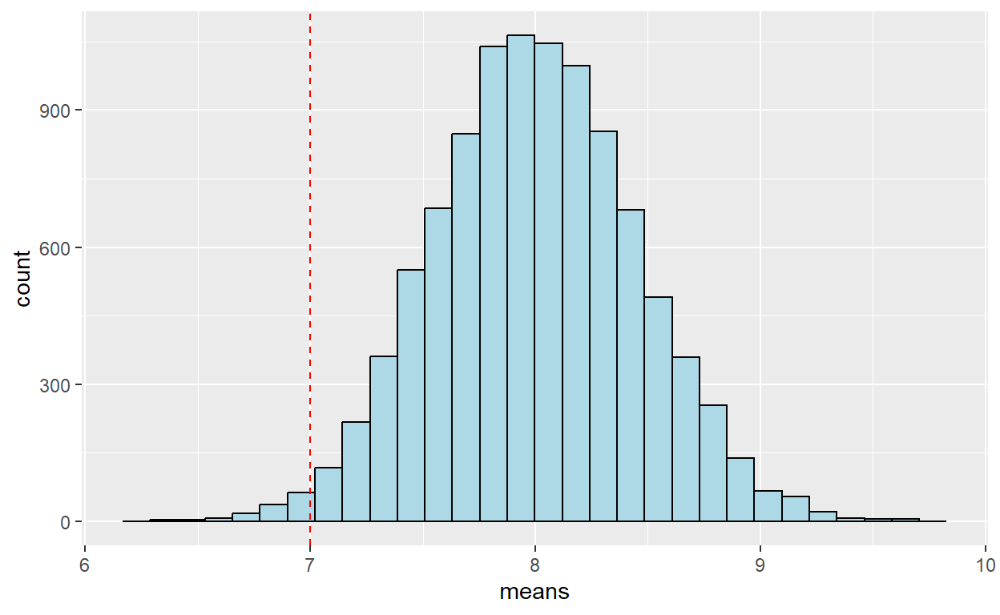

מבוא
במהלך הקורס עד כה התעסקנו רק בניתוח של נתונים אמיתיים. ביחידה זו נלמד כישור חדש - איך ליצור נתונים על סמך סימולציה (או בעברית - הדמיה) כדי לבדוק רעיונות תיאורטיים.
הרעיון יהיה זהה בכל אחת מהדוגמאות שנפגוש ביחידה זו:
1. אנחנו נניח הנחות מסוימות על המציאות (למשל - שמטבע הוא הוגן)
2. נבדוק מה התוצאות שהיינו מצפים לקבל בהינתן הנחות אלו (למשל - את כמות הפעמים שהגיוני שנקבל “עץ” מתוך 10 הטלות אם המטבע היה הוגן)
3. נשתמש במידע זה כדי לבחון האם סביר לקבל תוצאה מסויימת בהינתן אותן הנחות (למשל - האם סביר לקבל 10 “עץ” מתוך 10 הטלות)
4. ואם המסקנה תהיה שמאוד בלתי סביר שתוצאה כזו תתקבלה - נוכל להסיק שההנחות כנראה לא מתקיימות (והמטבע כנראה לא הוגן)
במהלך היחידה נכיר את השימוש בפונקציות הבאות:
rbinomrnormrunifsample
המבצעות דגימה אקראית מתוך התפלגות.
נכיר גם הפונקציה pnorm המאפשרת לנו לחשב סיכויים על פי
התפלגות נורמלית.
התפלגות בינומית
דגימה מתוך התפלגות בינומית
הסימולציה הפשוטה ביותר שנוכל לבצע כוללת הדמיה של הטלת מטבע. לפעולה זו יש 2 תוצאות אפשריות - עץ או פלי.
בR אפשר לבצע דגימה כזו באמצעות הפונקציה rbinom.
הפונקציה עורכת מספר הטלות מטבע ומחזירה לנו את כמות הפעמים שקיבלנו “עץ”.
להלן דוגמה:
coin_flip = rbinom(n = 1, size = 1, prob = 0.5) # פונקציה שתחזיר לנו 1 או 0, בהסתברות של 0.5
print(ifelse(coin_flip==1, "Heads","Tails") )הריצו את הקוד מספר פעמים. כשקיבלנו 1 המטבע נפל על “עץ” וכשקיבנו 0 המטבע נפל על “פלי”.
במידה ונרצה לבצע הטלה של יותר ממטבע אחד נוכל לשנות את הערך של
size בפונקציה rbinom. כעת הפונקציה תחזיר לנו
את מספר הפעמיים שקיבלנו “עץ” מתוך כל ההטלות שערכנו.
num_heads = rbinom(n = 1, size = 100, prob = 0.5)
print(num_heads)הריצו את הקוד מספר פעמים והתרשמו מטווח הערכים שמתקבלים.
התפלגות דגימה
במקרה הקודם בדקנו כמה פעמים קיבלו “עץ” מתוך 100 הטלות של מטבע, כשכל הרצה של הקוד ביטאה חזרה בודדת על הדגימה הזו. כיוון שאנחנו יודעים שהתהליך המתואר מכיל אלמנט אקראי, נרצה לחזור עליו מספר פעמים כדי לראות מה היא ההתפלגות של כמויות ה”עץ” שאנחנו מצפים לקבל עבור 100 הטלות מטבע.
התפלגות זו תתאר לנו את התפלגות הדגימה של כמויות ה”עץ” שמתקבלים מתוך 100 הטלות של מטבע הוגן.
במקרה זה, נוכל ליישם את החזרות המרובות באמצעות שינוי של הערך של
n בפונקציה rbinom. כשנזין מספר גדול מ1 במקום
זה נקבל חזרה וקטור של תוצאות, כשכל ערך בוקטור מבטא את מספר העצים שהתקבל
בסימולציה נפרדת של 100 הטלות מטבע.
num_heads = rbinom(n = 50, size = 100, prob = 0.5)
print(num_heads)## [1] 54 55 45 37 50 52 51 41 58 53 57 59 48 50 54 54 45 48 47 52 48 62 58 58 47
## [26] 53 49 46 53 52 42 41 49 45 54 67 60 56 49 49 56 53 46 54 53 53 53 44 48 54קיבלנו וקטור באורך 50, המכילים את התוצאות מ50 חזרות, כשבכל חזרה הטלנו 100 מטבעות.
נחזור על התהליך שוב, אבל הפעם נחזור על הדגימה 10,000 פעם ונציג את התוצאות בצורה גרפית באמצעות היסטוגרמה.
num_heads = rbinom(n = 10000, size = 100, prob = 0.5)
df = data.frame(num_heads = num_heads)
ggplot(df, aes(x = num_heads))+
geom_histogram( binwidth = 1, fill = "lightblue", color = "black")+
geom_vline(xintercept = 50 , color = "red", linetype = 2)בגרף ניתן לראות את התוצאות שקיבלנו עבור 10000 חזרות של הטלת מטבע. ניתן לראות שהתוצאות מתפלגות סביב הערך 50, כלומר כמות ה”עץ” שקיבלנו בממוצע עבור 100 ההטלות הייתה סביב 50. ענו על השאלה הבאה על סמך התרשים:
למעשה, נוכל לענות על השאלה הנ”ל על ידי חישוב: נעבור על הוקטור שקיבלנו ונבדוק כמה אחוז מהחזרות הניבו ערך קטן מ40. המספר שנקבל ישקף לנו את הסיכוי לדגום באופן אקראי פחות מ40 פעמים “עץ” מתוך 100 הטלות מטבע.
num_heads = rbinom(n = 10000, size = 100, prob = 0.5)
df = data.frame(num_heads = num_heads)
p_value = sum(num_heads < 40) / 10000
print(paste0("The probability of sampling less than 40 'heads' out of 100 coin flips of a fair coins is approximately ", round(p_value*100),"%"))## [1] "The probability of sampling less than 40 'heads' out of 100 coin flips of a fair coins is approximately 2%"ggplot(df, aes(x = num_heads))+ # המחשה חזותית
geom_histogram( bins = 40, aes(fill = num_heads < 40))+ # נצבע בצבע אחר את התרשים עבור ערכים הקטנים מ40
labs(fill = "Less than 40")+ # נשנה את כותרת המקרא
scale_fill_manual(values = c("lightblue","pink")) # נקבע את הצבעים בהם נעשה שימושבירור ערכי סף על פי הסתברות
אנחנו יכולים גם לבצע את התהליך ההפוך - ולבדוק מה כמות הטלות ה”עץ” שהסיכוי לקבל מספר הקטן ממנה מתאים להסתברות מסוימת, למשל - 5%.
num_heads = rbinom(n = 10000, size = 100, prob = 0.5)
df = data.frame(num_heads = num_heads)
num_heads_5_percent = quantile(num_heads, probs = 0.05) # פונקציה זו מחזירה לנו את האחוזון ה5 של וקטור התוצאות שלנו
print(paste0("There is a 5% chance to get less than ",num_heads_5_percent," heads in 100 coin flips"))## [1] "There is a 5% chance to get less than 42 heads in 100 coin flips"ggplot(df, aes(x = num_heads))+
geom_histogram( binwidth = 1, aes(fill = num_heads < num_heads_5_percent))+
labs(fill = "Less than 5 percent")+
scale_fill_manual(values = c("lightblue","pink"))תרגיל

חנה מצאה מטבע ברחוב ורצתה לבדוק אם הוא הוגן (כלומר, שהסיכוי לקבל בו “עץ” הוא 0.5). היא הטילה את המטבע 50 פעם וקיבלה “עץ” ב20 הטלות. בדקו באמצעות סימולציה בת 10,000 חזרות מה הסיכוי לקבל את התוצאה שחנה קיבלה או תוצאות קיצוניות יותר (פחות מ20 הטלות “עץ”) במידה והמטבע אכן היה הוגן.
פתרו את התרגיל בRstudio וענו על השאלה הבאה:
פתרון אנליטי
למעשה, יכולנו לבחון את השאלות הקודמות גם באמצעות הפתרון האנליטי
להתפלגות הבינומית, בעזרת הפונקציה pbinom.
פונקציה זו מקבלת מאיתנו תוצאה מסויימת (כמות ה”עץ” שקיבלנו), את מספר ההטלות הכולל ואת הסיכוי הכללי של המטבע לנחות על “עץ” - ומחזירה את הסיכוי לקבל את התוצאה הזו או נמוך ממנה במידה והמטבע אכן היה מאופיין בסיכוי לנחות על “עץ” כפי שהזנו.
למשל, אם נרצה לבחון את הסיכוי לקבל 10 “עץ” או פחות מתוך 30 הטלות של מטבע הוגן, נוכל לחשב זאת בצורה הבאה:
pbinom(q = 10,
size = 30,
prob = 0.5)משמע, יש סיכוי של 0.05% לקבל 10 עץ או פחות.
מאחר ששיטה זו לא נשענת על דגימה עם רכיב של אקראיות - היא תהיה מדויקת יותר מהתוצאות שנקבל בסימולציה.
התפלגות נורמלית
רוב המדדים שאנחנו מתעניינים בהם בפסיכולוגיה אינם דיכוטומיים, אלא רציפים. רבים מהם מתפלגים באופן נורמלי או קרוב לנורמלי באוכלוסייה, ולכן מאוד שימושי לבצע סימולציות שמערבות דגימה מהתפלגות נורמלית.
הפונקציה שתשמש אותנו במקרים כאלו הינה rnorm שמקבלת 3
ערכים: מספר הדגימות, ממוצע וס”ת.
one_sample = rnorm(n = 1, mean = 8, sd = 2)
many_samples = rnorm(n = 100, mean = 8, sd = 2)נוכל להשתמש בפונקציה זו כדי לבצע הדמיות שעונות על שאלות דומות לאלו שפגשנו סביב הטלת מטבע, אבל נוגעות למשתנים רציפים. למשל:
מה הסיכוי לדגום באקראי אדם בגובה 140 ס”מ או פחות מתוך אוכלוסיה בה הגבהים מתפלגים נורמלית עם ממוצע 150 וס”ת 10?
תרגיל השלימו את הקוד הבא כדי לענות על השאלה הנ”ל. דגמו
10,000 אנשים מתוך ההתפלגות שצוינה והיעזרו בקוד על מנת לבחון את הסיכוי
לדגום אדם בגובה 140 ס”מ או פחות.
population_distribution = rnorm(n = ____,
mean = ____,
sd = ____)
height = 140 # הגובה שאנחנו רוצים לברר את הסיכוי לקבל ערך שווה או נמוך ממנו
p_sample_140_or_under = mean(population_distribution<= height)
print(paste0("The chance of sampling a person with a height of ",height," or less is ", round(p_sample_140_or_under *100),"%"))
ggplot(data.frame(height = population_distribution),
aes(x = height))+ # המחשה חזותית
geom_histogram( bins = 40, aes(fill = height <= 140))+ # נצבע בצבע אחר את התרשים עבור ערכים הקטנים מ40
labs(fill = "Less than 140")+ # נשנה את כותרת המקרא
scale_fill_manual(values = c("lightblue","pink")) # נקבע את הצבעים בהם נעשה שימושפתרון אנליטי
כמו בהתפלגות בינומית - גם במקרה הזה ישנה פונקציה שמאפשרת לנו לעשות את הבדיקה הזו בצורה ישירה יותר, מבלי להידרש לדגימה.
פונקציה זו נקראת pnorm והיא בוחנת את הסיכוי לקבל ערך
נמוך מערך מסוים מתוך התפלגות נורמלית עם ממוצע וס”ת נתונים. למשל, את
התוצאה מהתרגיל האחרון יכולנו לחשב כך:
height = 140
p = pnorm(q = height, mean = 150, sd = 10)
print(paste0("The chance of sampling a person with a height of ",height," or less is ", round(p *100),"%"))## [1] "The chance of sampling a person with a height of 140 or less is 16%"באופן דומה - ישנה פונקציה שמבצעת את הפעולה ההפוכה. פונקציה זו נקראת
qnorm, והיא מקבלת מאיתנו סיכוי מסוים, ומחזירה את הערך
שהסיכוי לקבל ערך קטן ממנו זהה לסיכוי שהזנו. למשל:
p = 0.10
height = qnorm(p = p , mean = 150, sd = 10)
print(paste0("There is a ", round(p *100),"% chance of sampling a person with a height of ",round(height,1)," or less"))## [1] "There is a 10% chance of sampling a person with a height of 137.2 or less"כמו בהתפלגות בינומית, גם כאן החישוב האנליטי יהיה יותר מדויק מאשר התוצאות שנקבל בסימולציה.
התפלגות דגימה
נניח שאנחנו לא מתעניינים באדם אחד, אלא בממוצע של קבוצת אנשים.
במקרים כאלו נוכל להשתמש בפונקציה rnorm כדי לדגום מספר
ערכים, שמהם נוכל להפיק ממוצע. נוכל לחזור על התהליך שוב ושוב באמצעות
לולאה, כל פעם עם מדגם אחר, ולחשב כך את התפלגות הדגימה של הממוצע -
התפלגות הממוצעים שאנחנו מצפים לקבל כשאנחנו דוגמים מדגם בגודל מסויים מתוך
האוכלוסייה הזו.
נוכל להשתמש בסימולציה כזו כדי לענות על שאלות כמו:
אם היינו דוגמים מדגם של 20 אנשים מתוך אוכלוסייה ששעות השינה בה מתפלגות נורמלית עם ממוצע 8 וס”ת 2, מה היה הסיכוי לקבל מדגם בודד (גם הוא בן 20 נבדקים) בו הממוצע הוא פחות מ7?
הקוד יראה כך:
iterations = 10000 # מספר החזרות של ההדמיה
means = c() # וקטור ריק לטובת שמירת הממוצעים
for (i in 1:iterations){ # קביעת מספר החזרות בהתאם לערך שנקבע
sample = rnorm(n = 20, mean = 8, sd = 2) # דגימת 20 ערכים מתוך התפלגות נורמלית עם ממוצע 8 וס"ת 2
sample_mean = mean(sample) # חישוב ממוצע המדגם
means[i] = sample_mean # הוספת ממוצע המדגם לוקטור התוצאות
}
p_value_less_than_7 = sum(means < 7) / iterations # חישוב אחוז התצפיות הקטנות מ7
# הדפסת התוצאות כמשפט
print(paste0("The probability of randomly sampling a sample of size 20 with a mean less than 7 from this population is: ", p_value_less_than_7*100," %"))## [1] "The probability of randomly sampling a sample of size 20 with a mean less than 7 from this population is: 1.33 %"# הצגת התוצאות כהיסטוגרמה
ggplot(data.frame(means), aes(x = means)) +
geom_histogram(bins = 30, fill = "lightblue", color = "black")+ # היסטוגרמה
geom_vline(xintercept = 7, color = "red", linetype = 2) # קו אנכי מקוקו בערך 7
ניתוח כזה מאפשר לנו לבדוק עד כמה סביר שמדגם כלשהו הגיע מאוכלוסיה עם ממוצע וס”ת נתונים. אם נקבל ממוצע שמאוד בלתי סביר לקבל בדגימה מתוך האוכלוסייה שבדקנו - נוכל להסיק שהמדגם שלנו ככל הנראה לא הגיע מאוכלוסייה זו.
תרגיל
אספתם מדגם של ציוני שמחת החיים עבור 30 אנשים. בדקו מה הסיכויים לקבל מדגם בעל ממוצע הזהה לממוצע שהתקבל ממדגם זה מתוך האוכלוסייה של מדינה בה ציוני שמחת החיים מתפלגים נורמלית עם ממוצע 3.5 וס”ת 1.
היעזרו בסימולציה בת 10,000 חזרות.
happiness = c(3.9, 2.2, 3.4, 2.4, 2.6, 2.7,5.7, 2.9, 2.9, 3.8
1.1, 2.3, 0.8, 2.5, 2.9, 3, 2.8, 2.6, 0.2, 2.6,
1.6, 1.6, 3.2, 3.7, 5,2.8, 2.7, 2.3, 2.2, 2.4)happiness = c(3.9, 5, 3.5, 2.5, 2.6, 4.2, 5, 2.9, 2.9, 3.8,
4.1, 2.5, 4.5, 2.5, 2.9, 3, 4.5, 2.6, 2.6, 3.9,
3.2, 3.5, 3.4, 3.9, 5,4.1, 2.7, 2.3, 3.8, 2.4)
iterations = 10000 # מספר החזרות של ההדמיה
means = c() # וקטור ריק לטובת שמירת הממוצעים
for (i in 1:iterations){
sample = rnorm(n = 30, mean = 3.5, sd = 1)
sample_mean = mean(sample)
means = c(means, sample_mean)
}
p_value_less_than_3.5 = sum(means < mean(happiness)) / iterations
print(paste0("The probability of randomly sampling a sample of size 30 with a mean less than 3.5 from this population is: ", p_value_less_than_3.5*100," %"))
ggplot(data.frame(means), aes(x = means)) +
geom_histogram(bins = 30, fill = "lightblue", color = "black")+
geom_vline(xintercept = mean(happiness), color = "red", linetype = 2)פתרון אנליטי
גם את השאלות הנוגעות להתפלגות דגימה אנחנו יכולים לפתור ללא סימולציה - שכן התפלגויות הדגימה של הממוצע של מדגם המתפלג נורמלית מתנהגות בהתאם לכללים מוגדרים, אותם למדתם בשיעור סטטיסטיקה.
אנחנו יודעים שהתפלגות הדגימה של ממוצע המדגמים שנדמו מאוכלוסייה נורמלית תהיה גם היא נורמלית, עם תוחלת הזהה לתוחלת ההתפלגות של הערכים באוכלוסייה וטעות תקן (סטיית התקן של התפלגות הדגימה) השווה לסטיית התקן באוכלוסייה חלקי שורש גודל המדגם:
\[\sigma/\sqrt n\]
להמחשה, לפניכם השוואה בין ההתפלגות שמתקבלת מתוך סימולציה של התפלגות הדגימה אל מול התפלגות הדגימה התיאורטית שמתקבלת מתוך הכללים הנ”ל:
iterations = 10000 # מספר החזרות של ההדמיה
n = 20 # הנתונים עבור הסימולציה
mean = 8
sd = 2
means = c() # וקטור ריק לטובת שמירת הממוצעים
for (i in 1:iterations){ # ביצוע סימולציה של התפלגות דגימה
sample = rnorm(n = n, mean = mean, sd = sd) # דגימה
sample_mean = mean(sample) # חישוב ממוצע
means[i] = sample_mean # הוספת הממוצע לוקטור התוצאות
}
se = sd/ sqrt(n) # חישוב טעות התקן עבור התפלגות הדגימה האנליטית
ggplot(data.frame(means), aes(x = means)) +
geom_histogram(aes(y = ..density..), bins = 30, fill = "lightblue", color = "black",)+ # התפלגות דגימה על סמך סימולציה
geom_function(fun = dnorm, args = list(mean = mean, sd = se), color = "red", size = 1)+ # התפלגות דגימה - פתרון אנליטי
annotate(geom = "text", x = 6.7, y = 0.5, label = "Analytic solution", color = "red")+
annotate(geom = "text", x = 6.7, y = 0.6, label = "Simulation", color = "lightblue")+
theme_minimal()+
labs(x = "Means", y = "Density")בהתאם, אנחנו יכולים להשתמש בפונקציה pnorm גם כדי לבחון
את הסיכוי לקבל ממוצע כלשהו מתוך התפלגות הדגימה.
תרגיל חשבו את הסיכוי לאסוף מתוך אוכלוסייה בה ציון
הדכאוניות מתפלג נורמלית עם תוחלת 20 וס”ת 5 מדגם בן 40 נבדקים עם ציון
דכאוניות ממוצע של 18 מתוך.
p_value = pnorm(q = _____, # הממוצע שהתקבל במדגם
mean = ______, # תוחלת התפלגות הדגימה
sd = _______) # סטיית התקן של *התפלגות הדגימה* = טעות התקן
print(paste("P value =", p_value %>% round(4)))לחלופין, נוכל להשתמש בפוקנציה qnorm כדי לחשב את ערך הסף
שמתאים לp value מסויים, כך שכל ממוצע שקטן ממנו יהיה מובהק יותר מערך הp
value שציינו.
p = 0.05
threshold_value = qnorm(p = p,
mean = ____,
sd = _____)
print(paste0("For a sampe of size 40, any mean depression level smaller than ", threshold_value %>% round(1),
" would be have a p-value smaller than ", p %>% round(2)))התפלגויות נוספות
דגימה מאוכלוסייה שאינה נורמלית
כל הסימולציות שעשינו עד כה עונות על שאלות שיכולנו לפתור גם באופן אנליטי. הן אמנם עושות זאת באופן ברור יותר ומעט יותר אינטואיטיבי, אבל הן מפיקות תוצאה זהה למבחנים האנליטיים הקיימים.
עם זאת, ההדמיות מאפשרות לנו לבדוק בקלות גם שאלות שאין להן פתרון אנליטי יודע, או שיש להן פתרון - אבל הוא מורכב ולא נלמד בקורסי הסטטיסטיקה שלקחנו.
דוגמא אחת שכזו היא מצב בו המדד שאנחנו מתעניינים בו מתפלג באופן שאינו נורמלי. למשל - כשהוא מתפלג באוכלוסייה באופן אחיד.
כדי לדגום מתוך התפלגויות שאינן נורמליות נוכל להיעזר בפונקציות כדוגמת
runif (התפלגות אחידה), rexp (התפלגות מעריכית)
או פונקציות נוספות המאפשרות לנו לדגום מתוך התפלגויות אחרות.
דגימה מהתפלגות אחידה
תרגיל
ידוע שהאורך של שקדי מרק במפעל מסוים מתפלג באופן אחיד בין 0.5-1.5 ס”מ. מה הסיכוי שנדגום באקראי 10 שקדי מרק עם אורך ממוצע של 0.8 ס”מ ומטה?
היעזרו בפקודהrunif המשמשת באופן הבא:
# דוגמה לדגימת 30 תצפיות מהתפלגות אחידה בין הערכים 1 ו2א
sample_vec = runif(n = 30, min = 1, max = 2 )פתרו את התרגיל בRstudio וענו על השאלה הבאה:
דגימה מתוך וקטור
סוג התפלגות הדגימה האחרון שנשתמש בו בפרק זה נוגע לדגימה מתוך וקטור.
כאן אנחנו נספק את הערכים האפשריים ונבצע מתוכם דגימה באקראי. לצורך כך
נשתמש בפונקציה sample.
לדוגמה, אם נרצה לדגום באקראי 3 הטלות קובייה נוכל לעשות זאת בצורה הבאה:
three_rolls = sample(x= 1:6, # וקטור המכיל את המספרים בין 1 ל6
size = 3, # כמות הדגימות שנרצה לדגום
replace = T) # משתנה השולט בהאם הדגימה תהיה עם או ללא החזרה
# במידה ונדגום ללא החזרה - לא נוכל לקבל פעמיים את
print(three_rolls) # אותה התוצאה, ולכן ביקשנו כאן דגימה עם החזרה## [1] 2 1 2תרגיל
בנו התפלגות דגימה עבור הערך המקסימלי מתוך הטלה של ארבעה קוביות.
היעזרו בפונציה max כדי לחלץ מתוך וקטור את הערך
המקסימלי.
מבחני עוצמה
שימוש נוסף, ואחרון עבור יחידה זו, לסימולציות משמש אותנו לחישוב הסיכוי לקבל תוצאה מובהקת בניסוי.
נניח שאנחנו רוצים לבצע ניסוי כלשהו - אבל לא בטוחים אם גודל המדגם שלנו מספיק גדול כדי שנצליח לקבל תוצאה מובהקת. כדי לבדוק זאת נוכל לבצע סימולציה בה אנחנו:
1) מניחים שהאפקט שאנחנו מחפשים אכן קיים בעולם
2) דוגמים מתוך התפלגות שמתאימה לאפקט זה מדגם בגודל הזהה
למדגם שאנחנו מתכננים לאסוף בניסוי האמיתי שלנו
3) בודקים אם התוצאה שקיבלנו במדגם המסומלץ מספיקה כדי
לדחות את השערת האפס שלנו
4) חוזרים על התהליך מספר רב של פעמים, ובודקים בכמה אחוז
מהמקרים קיבלנו תוצאות מובהקות סטטיסטית
תוצאה של ניתוח כזה תוכל לעזור לנו להעריך את הסיכויים שלנו לקבל תוצאה מובהקת בניסוי שלנו, תחת ההנחה שהאפקט שאנחנו מחפשים קיים.
מאפיין זה של הניסוי המתוכנן מכונה “עוצמת המבחן”.
עריכת מבחן בודד
לפני שניגש לסימולציה נתחיל בלערוך מבחן בודד, כפי שעשינו מוקדם יותר ביחידה.
המבחן שנערוך, הנקרא מבחן Z לתוחלת מדגם בודד, בוחן את הסיכוי לקבל מדגם בעל ממוצע מסוים במידה ודגמנו מאוכלוסייה עם ממוצע וס”ת מוגדרים - ואם הסיכוי לקבל תוצאה כזו קטן מדי (לרוב - קטן מ0.05) נסיק שהקבוצה שדגמנו ממנה כנראה אינה שייכת לאוכלוסייה זו.
למשל: נבחן האם אנשים שלומדים פסיכולוגיה נמוכים יותר בתכונת הנוירוטיות ביחס לאוכלוסיית הסטודנטים הכללית, בהינתן וידוע שבקרב כלל הסטודנטים תכונה זו מתפלגת נורמלית עם ממוצע 3 וס”ת 1.
נערוך את המבחן באמצעות הפונקציה pnorm, עבור המקרה בו
אספנו מדגם של 30 סטודנטים וקיבלנו עבורם ציון נוירוטיות ממוצע של 2.5:
# נניח ואספנו מדגם של 30 סטודנטים וקיבלנו עבורם ציון נוירוטיות ממוצע של 2.5
mean_score = 2.5
sample_size = 30
p_value = pnorm(mean_score , # הממוצע שקיבלנו
mean = 3, # הממוצע תחת השערת האפס
sd = 1/sqrt(sample_size)) # טעות התקן
print(p_value)## [1] 0.00308495ערך הp value שקיבלנו קטן מ0.05 ולכן נוכל לדחות את השערת האפס. כלומר - אם נקבל ממוצע נוירורטיות של 2.5 ממדגם של 30 סטודנטים לפסיכולוגיה, נוכל להסיק שרמת הנוירוטיות של סטודנטים לפסיכולוגיה קטנה מ3, בהינתן שסטיית התקן של רמת הנוירוטיות באכולוסייה הינה 1.
דגימה מתוך H1
בפועל, גם אם המצב האמיתי בעולם הוא שהתוחלת של הנוירוטיות של סטודנטים לפסיכולוגיה היא באמת 2.5 - עדיין מאוד סביר שבדגימה אקראית כלשהי נקבל מדגם עם ממוצע גבוה יותר , כך שייתכן שנקבל מדגם שלא יאפשר לנו לדחות את השערת האפס.
כדי להבין את הסיכויים לכך נערוך סימולציה:
אנחנו נדמה את התהליך בו אנחנו דוגמים מדגם של 30 ערכים מתוך אוכלוסייה שכזו (עם תוחלת נוירוטיות השווה ל2.5), ונבחן האם המדגם שלנו אפשר לנו לדחות את השערת האפס.
נחזור על התהליך מספר רב של פעמים ונבחן בכמה אחוז מהמקרים המדגם שקיבלנו היה עם ממוצע נמוך מספיק.
sample_size = 30 # גודל המדגם
p_values = c() # וקטור ריק לשמירצת התוצאות
for (i in 1:1000){
sampled_neuroticism = rnorm(sample_size, mean = 2.5, sd = 1) # נדגום 30 ערכים
sample_mean = mean(sampled_neuroticism ) # נחשב את הממוצע של המדגם
p_value = pnorm(sample_mean, # ביצוע המבחן עבור המדגם שקיבלנו
mean = 3,
sd = 1/sqrt(sample_size))
p_values[i] = p_value # הוספת ערך המובהקות לוקטור התוצאות
}
percent_significant = mean(p_values < 0.05) # חישוב אחוז המקרים בהם קיבלנו תוצאה מובהקת
print(paste0("Power = ",round(percent_significant,2))) # דיווח## [1] "Power = 0.86"כלומר - אם המצב בעולם הוא שתכונת הנוירוטיות אצל סטודנטים לפסיכולוגיה אכן מתפלגת נורמלית עם ממוצע 2.5 וס”ת 1, אז ב86 אחוז מהמקרים מדגם בגודל 30 יניב תוצאות מובהקות סטטיסטית ויראה שהם אכן נמוכים יותר בתכונה זו מאוכלוסיית הסטודנטים הכללית.
תרגיל
תרגיל בצעו ניתוח עוצמה למקרה הבא
חוקר מעוניין לבחון האם החתולים בקמפוס חמודים יותר מחתולים בשאר העיר. מכיוון שידוע שציוני החמידות של חתולים בירושלים מתפלגים נורמלית עם תוחלת 6 וס”ת 1.5, הוא מתכנן לאסוף מדגם של חתולים בקמפוס ולהשוות את הממוצע שלהם להתפלגות הדגימה של אוכלוסייה זו.
בהינתן וציוני החמידות של החתולים בקמפוס מתפלגים
נורמלית עם תוחלת 6.5 וס”ת 1.5 - מה הסיכוי שמדגם של 40 חתולים יספיק לחוקר
כדי לקבל תוצאות מובהקות סטטיסטית?
הערה: שימו לב שההשוואה שעורך החוקר בודקת אם החתולים בקמפוס חמודים
יותר אילו ערך הp value שמתקבל מהפונקציה
pnorm בוחן את הסיכויים לקבל ערך נמוך יותר
- ולכן צריך לחשב את הערך המשלים ל1 לערך שתקבלו:
p_value = 1-pnorm(...).
פתרו את התרגיל בRstudio וענו על השאלה הבאה:
הגשה
עברו על הקובץ וודאו שהגשתם את כל התרגילים ועניתם על כל השאלות
במידה וכל התשובות שלכם תקינות יש ללחוץ על הכפתור: Generate, להעתיק את
הטקסט שמופיע בחלון למטה ולהגישו במודל
בהצלחה!
http://google.com